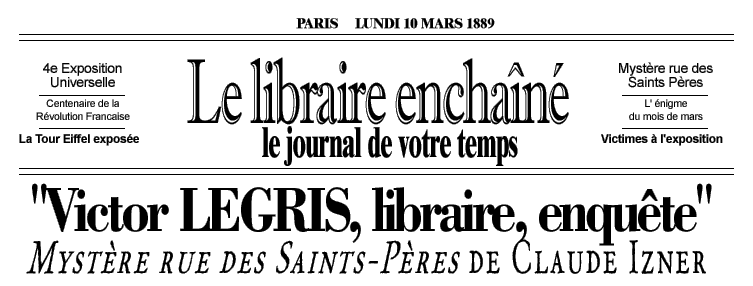
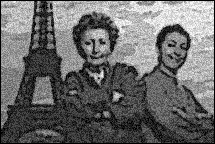
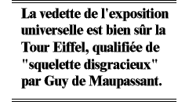

| “Sanglée
dans un corset neuf qui craquait à chaque pas, Eugénie
Patinot descendait l'avenue des Peupliers. Elle se sentait déjà
lasse au seuil d'une journée qui promettait d'être exténuante.
Tarabustée par les enfants, elle avait quitté à
regret la fraîcheur de la véranda. Si son maintien parvenait
à donner l'illusion d'une dignité imposante, à
l'intérieur c'était la débandade : poumons compressés,
estomac révulsé, douleur sourde à la hanche,
et par-dessus le marché, palpitations. – Ne courez pas, Marie-Amélie. Hector, cessez de siffler, cela fait mauvais genre. – Ma tante, nous allons rater l'omnibus! |
|
|
||

A l'aube du XXème siècle, 4ème exposition universelle à Paris Paris, juin 1889 : le monde entier se presse à l'Exposition Universelle où la Tour Eiffel, qui vient d'être achevée, accueille plus de mille visiteurs par jour. Les Français s'aperçoivent qu'ils ont un Empire colonial en découvrant les pavillons exotiques et les villages indigènes groupés au pied d'un des temples d'Angkor reconstitué. C'est dans cette ambiance de kermesse que survient une série de morts inexpliquées. Les victimes ne présentent aucune blessure apparente et, hormis le fait d'avoir été présentes à l'Exposition, rien ne les relie entre elles. Victor Legris, propriétaire d'une librairie rue des Saints-Pères, n'aurait nulle raison de se mêler de ces affaires s'il n'était intrigué par le comportement de son père adoptif et associé, Kenji Mori. Il décide d'enquêter, au risque de voir basculer toutes ses certitudes... |
||
| C'est dans Mystère rue des Saints-Pères que Victor fait la connaissance et s'éprend de Tasha Kherson, une jeune femme russe pleine de tempérament, peintre par passion et caricaturiste dans un journal populaire par raison. Journal dans lequel Victor lui-même signe quelques papiers à l’occasion |
| Claude Izner est
le pseudonyme de deux sœurs, Liliane Korb, et Laurence Lefèvre. Leur goût pour l'histoire et le polar leur ont donné l'idée de créer un nouveau personnage pour "Grands détectives", Victor Legris, libraire et enquêteur dans le Paris du XIXe siècle.  |
| Victor Legris a passé son enfance à Londres. Il perd son père à l'âge de huit ans et c'est sa mère, Daphné, qui se charge de son éducation. La série débute alors que Victor, âgé de trente ans, vit et travaille à Paris dans sa librairie située au 18, rue des Saints-Pères : "L'Elzevir". Il y est aidé par son associé et ami, Kenji Mori, un japonais de 50 ans. Les deux hommes sont très liés et se connaissent depuis toujours, Kenji ayant joué un rôle fondamental lorsque Victor et sa mère se sont retrouvés seuls. Depuis peu, travaille également avec eux, un jeune commis prénommé Joseph. |
